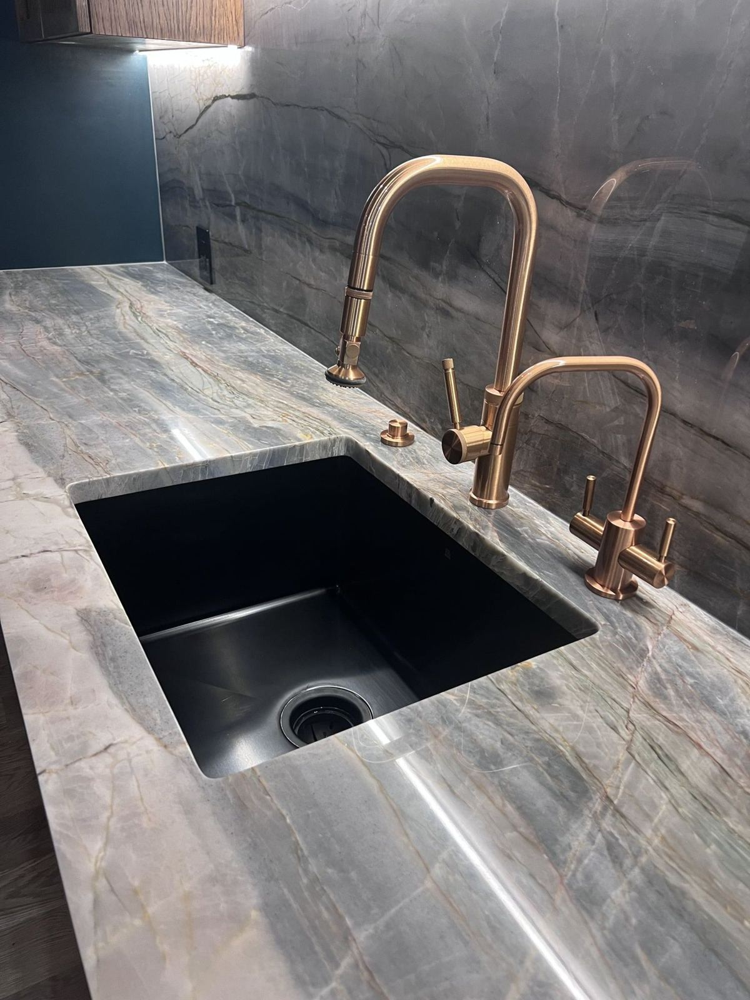
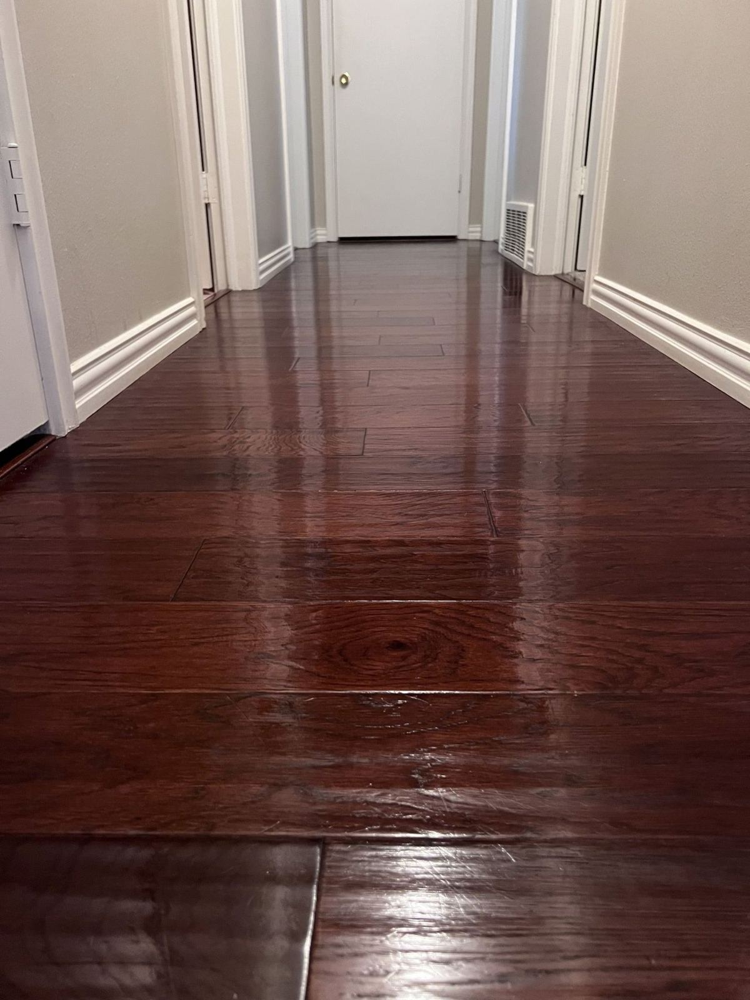
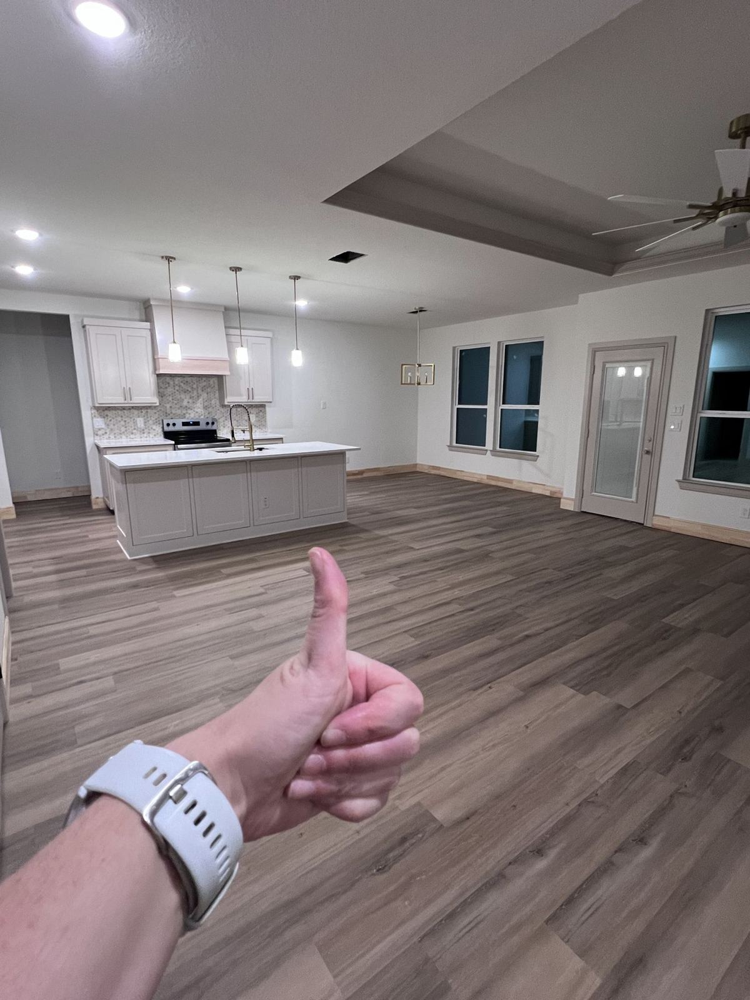
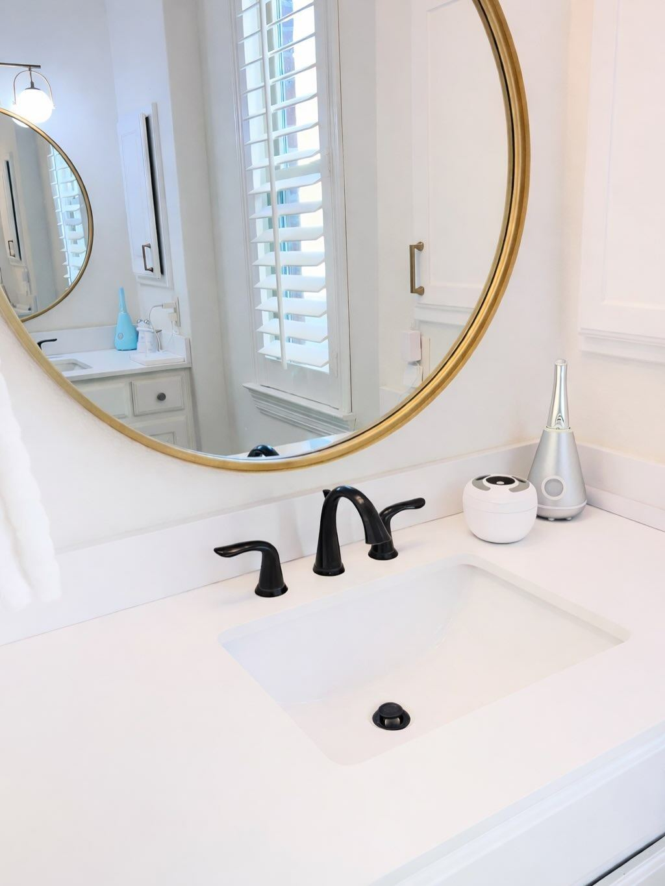
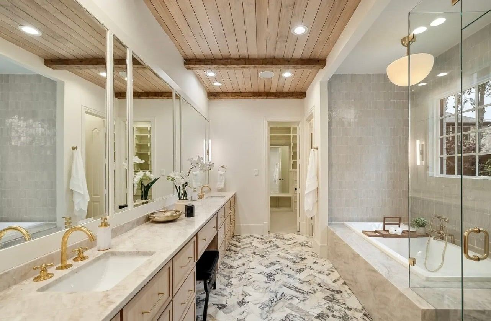

Best first clean
Deep Cleaning
Baseboards, ceiling fans, grout, inside the oven and fridge, and inside cabinets when they're empty. Start here if it's been a while.
See Deep CleaningSalt of the Earth Cleaning Co. is a locally owned, pet-friendly house cleaning company based in Richardson, serving homes all over Dallas–Fort Worth, from Plano and Dallas to Fort Worth and Denton. Get an instant price online in about two minutes, then pick the day that works for you.
★★★★★ 5.0-star rated on Google · Pay after your clean

Baseboards, ceiling fans, grout, inside the oven and fridge, and inside cabinets when they're empty. Start here if it's been a while.
See Deep Cleaning
Weekly, every other week or monthly. For a limited time, recurring clients get a reduced rate on every visit.
See Recurring Plans
Empty-home cleaning top to bottom, so you can hand back the keys — or move in — with nothing left to worry about.
See Move-In/Move-Out
The every-visit essentials: kitchens, bathrooms, floors, dusting and surfaces, done thoroughly the same way every time.
See Standard CleaningSalt of the Earth Cleaning Co. was founded on one principle: excellence, in every home, every time. We'd rather take the extra few minutes on the light switches, the fan blades and the edge of the tub than rush to the next house.
Soap scum, grout, fixtures and the base of the toilet — not just a quick wipe.
Our clients notice the baseboards, the fans and the windows, and they tell us so.
Deep cleans include inside the oven and refrigerator, plus inside cabinets when they're empty.
See your price before you book. Nothing is due until your clean is done.
Get My Instant Quote
“If you want a cleaning company that truly takes great pride in a job well done, Salt of Earth is the right choice.”
— T. Rasmussen
“Lindsey did a fantastic job on our first deep clean – you could truly see the difference everywhere, from the fans and the baseboards to the living room windows I specifically asked for.”
— K. McGee
“It's always a great feeling after she's done cleaning our living space to know that it's been thoroughly swept, wiped, dusted, and vacuumed to perfection. Highly recommend!”
— Tom R., recurring client (Yelp)
Read more reviews → · ★★★★★ 5.0 on Google
We're based in Richardson and clean homes all over DFW, from Plano, Frisco and McKinney to Dallas, Arlington, Fort Worth and Denton.
No. Many clients leave a key, lockbox or entry code. We take the same care whether you're home or not.
Yes. For a limited time, weekly, every-other-week and monthly clients get a reduced rate on every visit.
After your clean. Nothing is due until the job is done.
Yes. We bring pet-friendly, eco-friendly cleaning supplies, or we can use yours if you prefer.
Please give at least 48 hours' notice to cancel or reschedule. Late cancellations may be subject to a fee.
Your evenings and weekends shouldn't belong to the mop. See your price in about two minutes and grab a time that works for you.
Open Monday–Sunday, 8:30 AM–7:30 PM · Serving all of Dallas–Fort Worth from our home base in Richardson